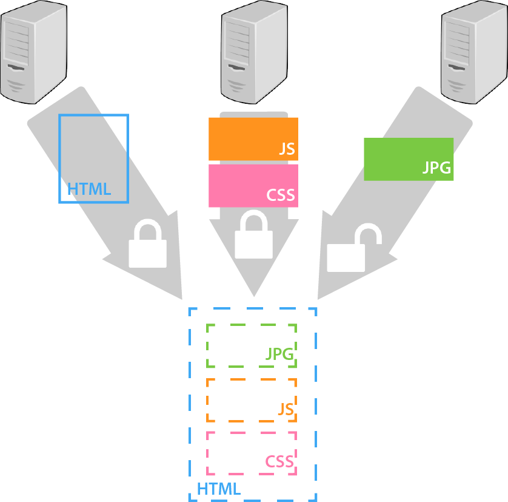
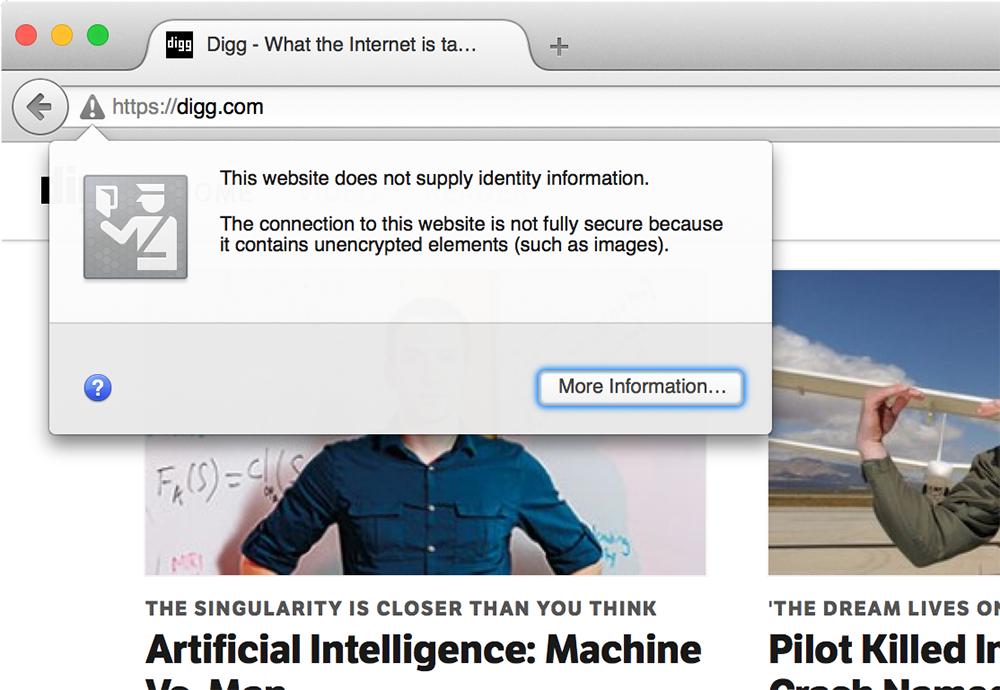

Object Fetch Protocol
Web pages are made up of multiple objects. This first object fetched is an HTML document, which tells your browser which additional objects it should load and how to display them. Additional objects could include scripts, style sheets, and images.
Browsers open multiple connections to fetch these embedded objects. Loading the page using an HTTPS URL instructs the browser to download the root HTML document over a secure connection, but that HTML document might tell the browser to use unsecure connections to fetch some embedded objects.

When this happens, modern browsers either display a warning icon or omit the padlock icon altogether:



This section of the summary compares the number of objects loaded over HTTP and HTTPS for each version of each site.